<@1275835621109268550> takes race-day preparation at Texas Motor Speedway very seriously. His morning begins by waking up in full Crayola gear screaming, “IT’S RACE DAY!” before changing into his SMT Racing suit and crushing a stack of pancakes. After breakfast, Evan visits his homemade Texas Motor Speedway shrine, complete with candles, trophies, race photos, a miniature track, and an actual bag of Texas dirt, where he asks the racing gods for speed and wisdom. Finally, Evan walks outside into the Texas sunrise, drops to his knees, and kisses the pavement of Texas Motor Speedway. For most drivers, Texas is another stop on the schedule. For Evan Parry, it’s a religion.
HLRN ORIGINAL · EPISODE 3
The Inauguration
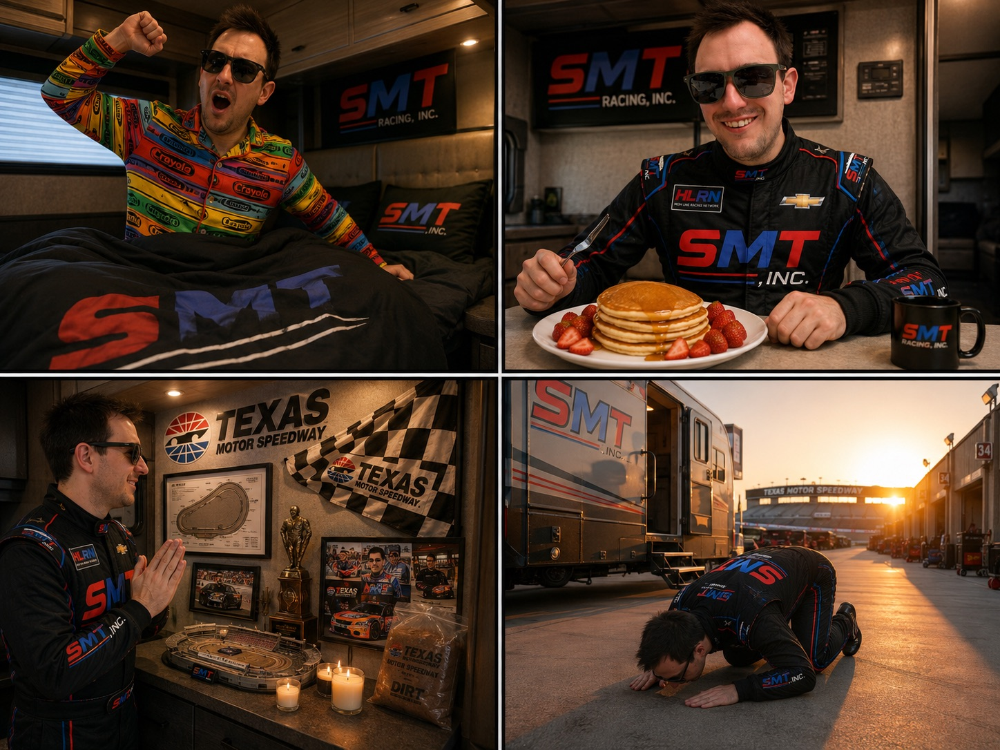
Update 8:30 est
It’s a big day at Texas Motor Speedway as <@1275835621109268550> is officially named the new Mayor of the speedway. But how will Evan handle his newfound power?
Meanwhile, after weeks of complaints about Rowdy Racing’s driving style, <@1051673096463077386> <@1078506766473625600> <@810534889610674196> take action by delivering a state-of-the-art Rowdy Racing Performance and Preparation Center.
We go behind the scenes to see exactly how Rowdy Racing prepares for race night and whether all this training can actually make them better.
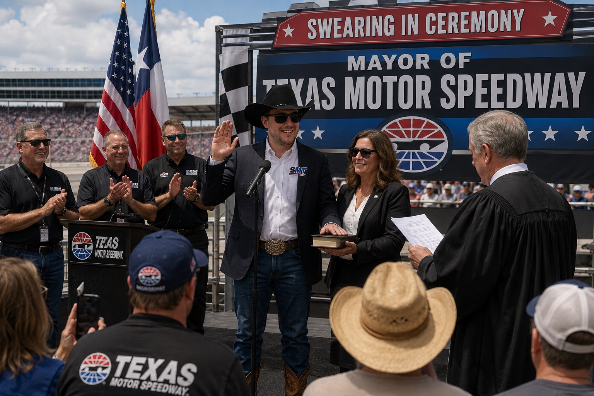
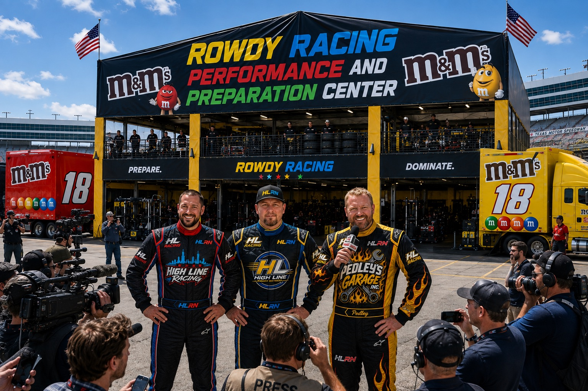
Update 9 est
Evan is settling into his new Mayor’s Office and has already made his first big hire, naming <@931596221183819827> as his new track secretary. Donny is thrilled about the opportunity, but wait… is that <@415334667370364928> ?! Yes, you heard that correctly. Somehow, Bill is back, and Evan has named him Secretary of Taxation. What could possibly go wrong?
Meanwhile, we’ll take a look inside Rowdy Racing’s Sports Hydration Center, where apparently “hydration” means Gatorade surrounded by piles of M&M’s and roast beef sandwiches. Yikes.
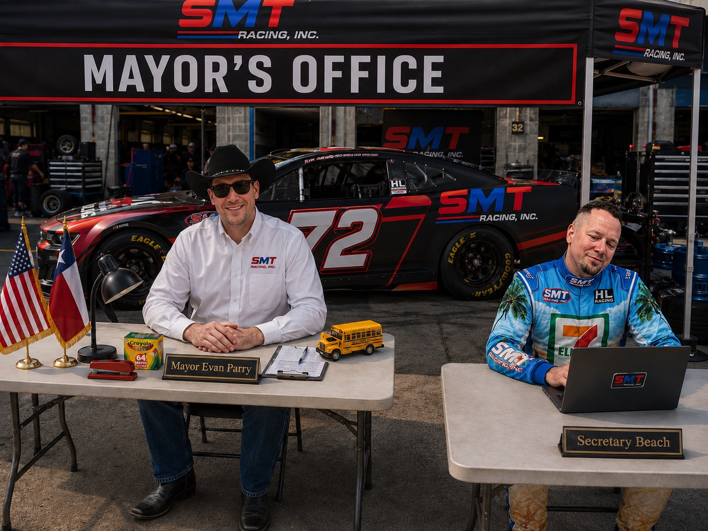
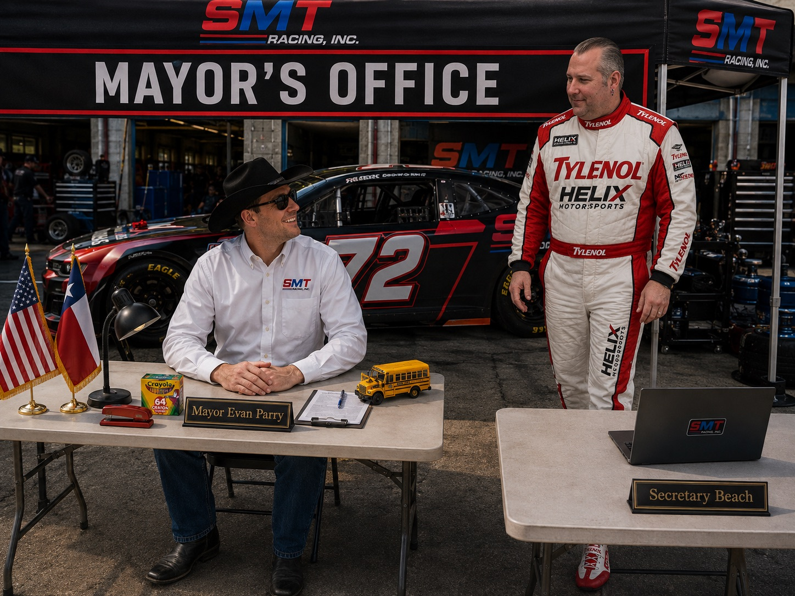
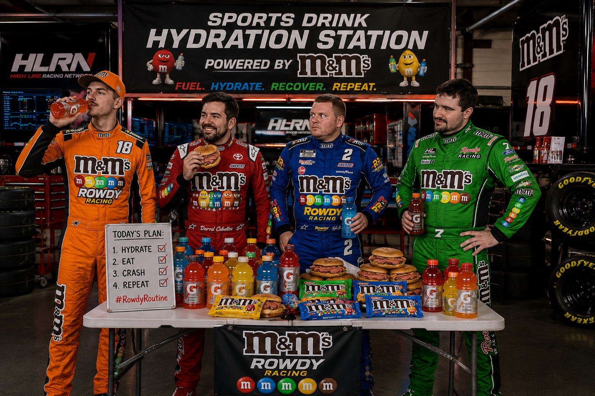
Update: 9:30 est
<@415334667370364928> and <@1275835621109268550> get to work immediately, with Evan firing off ideas while Bill eagerly records everything in his giant tax binder.
Evan: “We should probably charge people seven bucks if they park their golf carts in the garage.”
Bill writes: Garage Residency Tax — $7
Evan: “Maybe five bucks when they fill up?”
Bill: Fuel Tax — $5
And they’re just getting started. What else are Evan and his new Secretary of Taxation looking to target? Race tires? Garage snacks? Maybe even a Rowdy Racing Impact Tax?
Meanwhile, you have to believe Rowdy Racing has heard enough about their driving lately. Their solution? A brand-new Anger Management Station, which is nothing more than a punching bag with another driver’s picture taped directly to it.
Wait a minute…That driver looks awfully familiar.
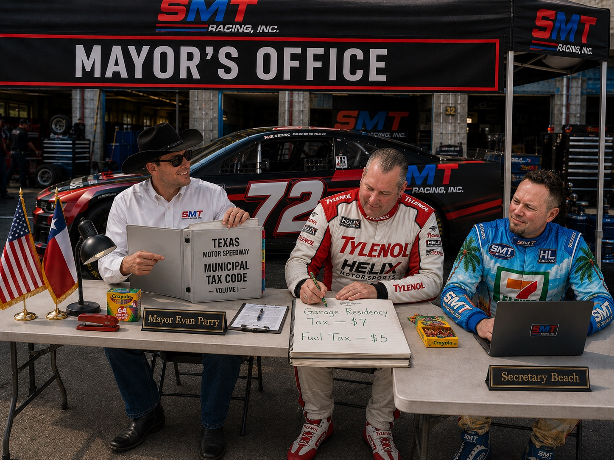
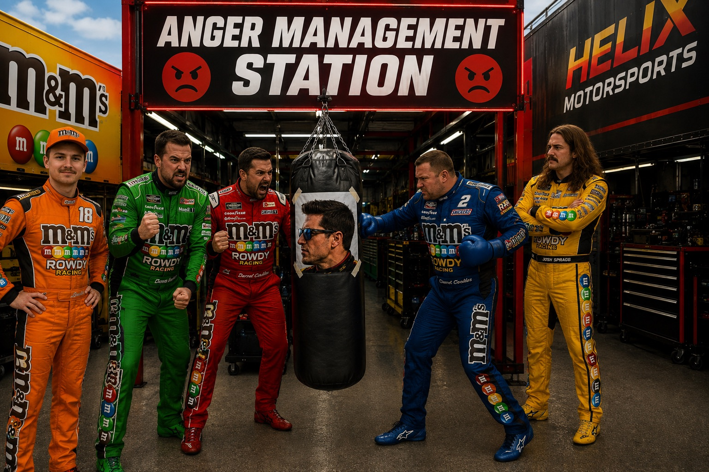
Update 10 est
<@1275835621109268550> catches two drivers speeding at 11 MPH in a 10 MPH golf-cart zone at Texas Motor Speedway. He writes his first ticket. <@415334667370364928> adds fees:
Speeding Fine
Processing Fee
Roadway Tax
Emissions Assessment
Convenience Fee
<@1135028671418220634> and <@548734335482855435> ‘s Final total: $247.38
Evan: “Wasn’t it supposed to be twenty bucks?”
Bill: “Taxes.”
Meanwhile at Rowdy Racing Performance Center, <@393505063584399360> and <@476786348485771271> practice yelling arguments for Argument Training, getting scored on intensity and blame-shifting.
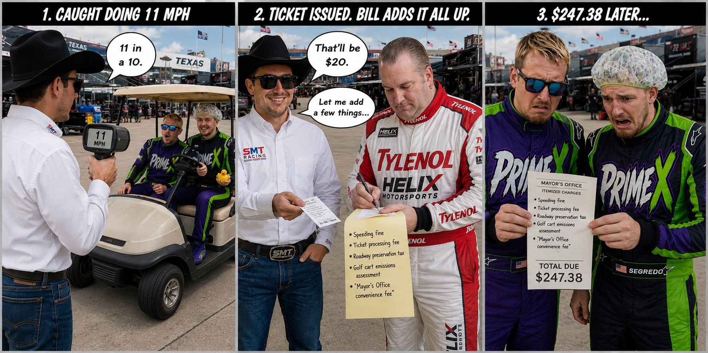
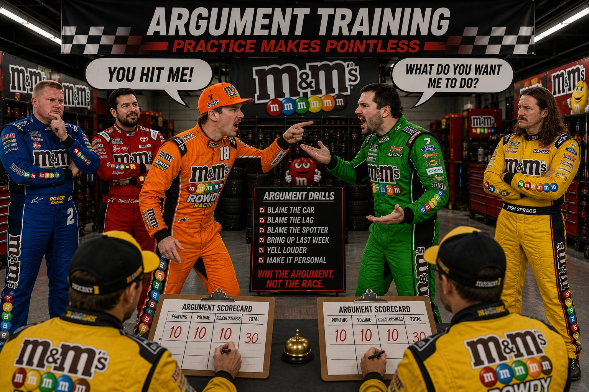
Update 11 est
<@1275835621109268550> takes garage security to another level by establishing an official border checkpoint between pit road and the Texas Motor Speedway garage. Naturally, <@415334667370364928> immediately sees dollar signs. Within minutes, a huge sign appears
A bruised <@603009327044755487> , still wearing a neck brace after his T-bone wreck at Charlotte last week, approaches the checkpoint and stares at the sign. “You’re taxing my neck brace?” Bill barely looks up from his paperwork. “Medical infrastructure impact.” Evan nods approvingly.
Meanwhile, inside the Rowdy Racing Performance Center, we check out the Mental Visualization Station, where <@463233262886715392> lies completely still on a massage table with his eyes closed while a coach quietly whispers in his ear: “Imagine yourself not wrecking on Lap 3.” Matthew concentrates intensely, apparently attempting to visualize the impossible.
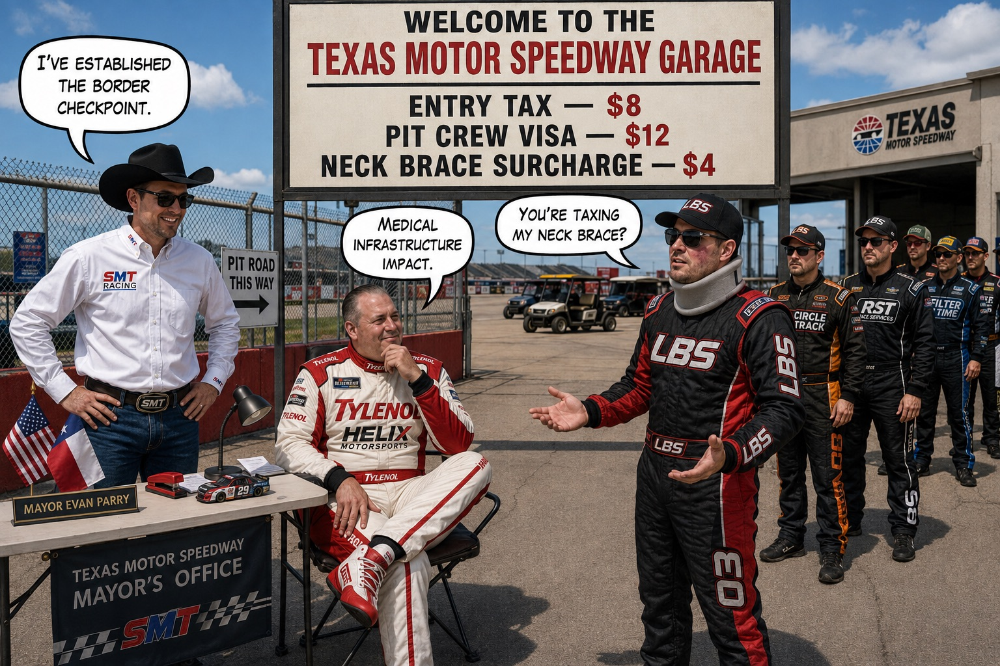
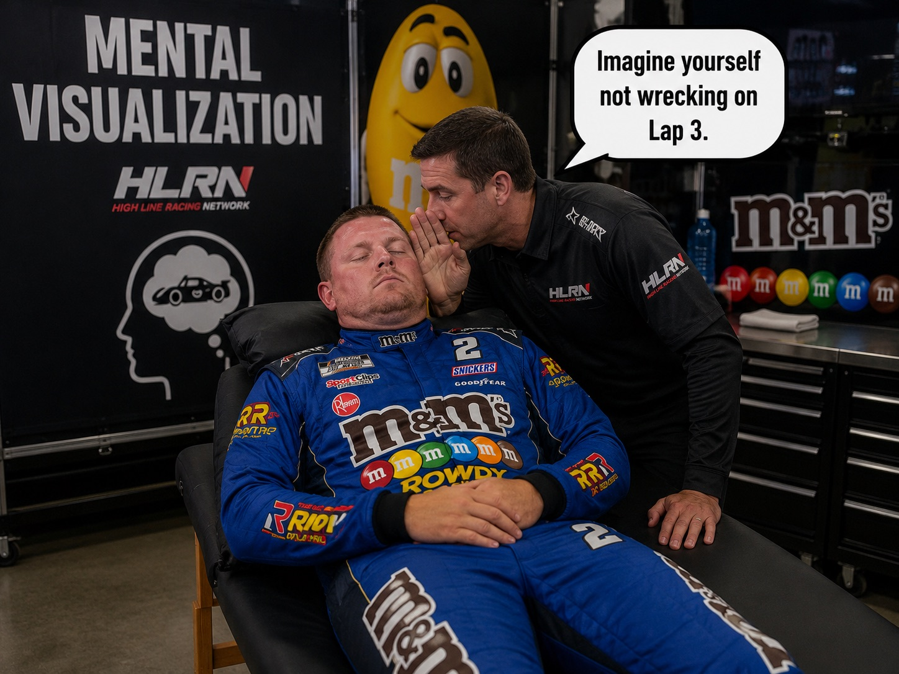
12 est
<@931596221183819827> is starting to get curious about exactly how <@415334667370364928> new taxation system works. While Bill sorts the latest haul into two separate boxes, Donny notices one marked “Texas Motor Speedway Municipal Revenue” and another suspiciously labeled “Administrative Processing.”
Donny: “Why does the government need a processing box?”
Bill: “Government is complicated.”
Donny stares at the second box for a few seconds. Something tells us Secretary Beach may want to start keeping a closer eye on Bill’s bookkeeping.
Meanwhile: We take a look at Rowdy Racing’s Drafting Practice, where drivers sit in rolling office chairs just inches apart while crew members push them around the tent, apparently teaching them the fine art of staying bumper-to-bumper without destroying office furniture.
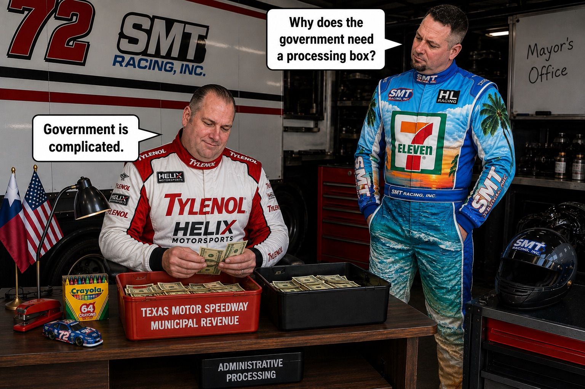
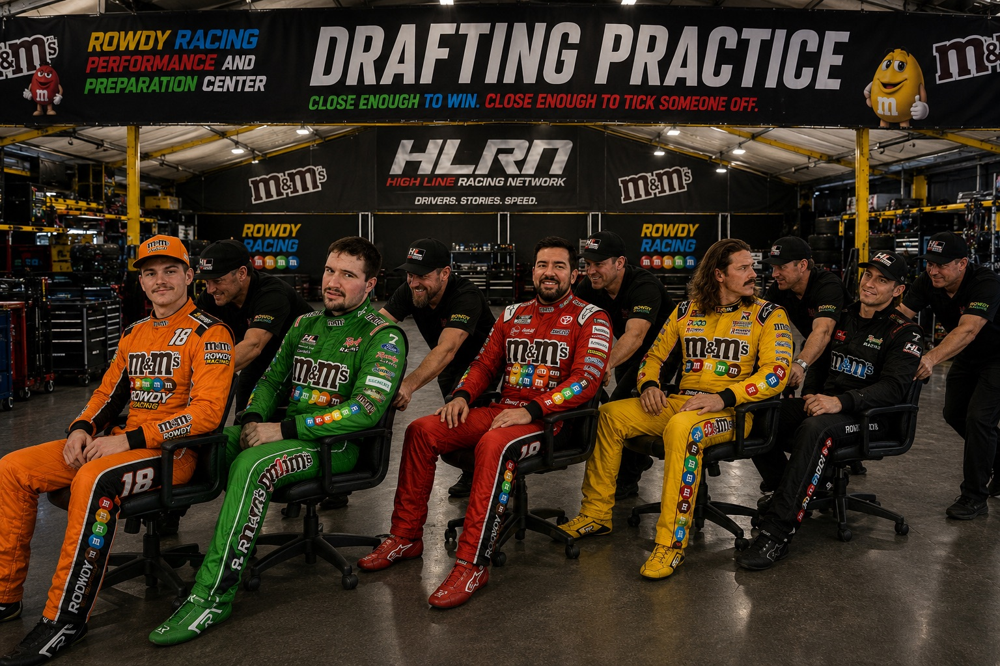
<@931596221183819827> is starting to get curious. After watching <@415334667370364928> leave the Mayor’s Office carrying a suspicious duffel bag, but accidentally leaves her personal binder. Beach waits until the coast is clear and cracks open Bill’s massive tax binder. What he finds isn’t exactly normal government bookkeeping and beside every one is a column labeled “BILL’S CUT.” Beach’s eyes get wider as the numbers climb. Then he reaches the bottom of the page: “TOTAL: DON’T TELL EVAN.” Uh oh. It looks like Secretary Beach may have just stumbled onto something Bill definitely didn’t want anyone seeing.
Meanwhile: Over at the Rowdy Racing Performance and Preparation Center, we check in on Reaction-Time Testing, and apparently the scientific method here is pretty simple. <@854413849716326431> sits unsuspectingly in an office chair while <@1470973699707633774> suddenly fires an M&M directly at him and screams, “CAUTION!” Josh nearly falls out of the chair. Rowdy Racing calls it improving reaction speed. Everyone else calls it throwing candy at your teammate.
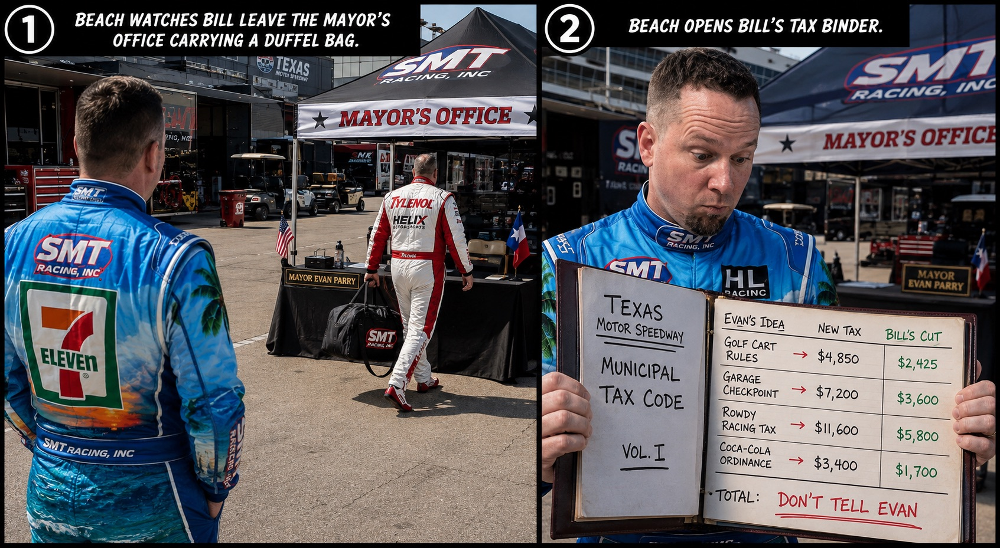
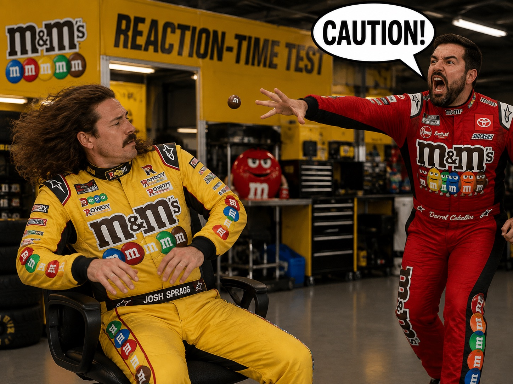
Update 2 est
<@1275835621109268550> ‘s new administration continues to roll out some truly groundbreaking programs at Texas Motor Speedway. Today’s order of business? The appointment of the track’s official Ceremonial Tree, but somehow, he mistakes the tree for <@636696157590126613> aka Tree branch. We love you Matthew
Meanwhile: Back at the Rowdy Racing Performance and Preparation Center, we move on to M&M’s Distraction Training. <@393505063584399360> and <@476786348485771271> are strapped into the simulators and expected to stay completely focused while giant M&M mascots surround them, blasting music, screaming through megaphones and holding signs like “YOU’RE SLOW!”, “FOCUS? LOL!” and “LOSER!” The goal is to teach drivers how to ignore distractions during a race. Judging by the looks on their faces, the M&M’s may be winning.
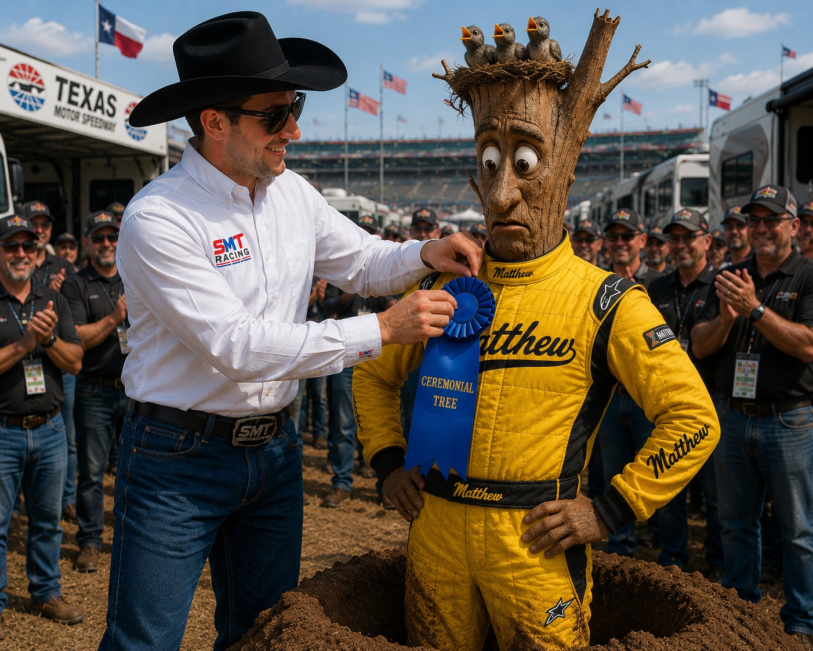
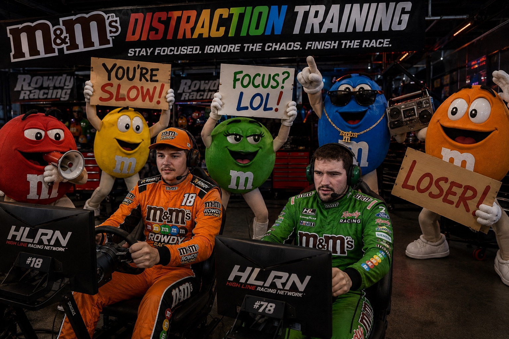
Update: 3 est
Mayor <@1275835621109268550> is continuing his grand tour of Texas Motor Speedway, and <@546141721705185322> has been given the honor of driving him around the garage. Suddenly Evan points excitedly into the distance like he’s just spotted a national landmark. “AND HERE, I BOUGHT MY FIRST COCA-COLA!” Kody doesn’t say a word. He just keeps driving with the expression of a man realizing this may be the longest golf-cart tour of his life. Apparently every great mayor has historic sites, and Evan’s first Coke is now officially one of them.
Meanwhile: Back at the Rowdy Racing Performance and Preparation Center, it’s time for Victory Burnout Conditioning. The training program is simple: spin around violently in an office chair until you have absolutely no idea where you are, then get up and walk a perfectly straight line. <@463233262886715392> is still spinning with stars circling his head while <@854413849716326431> attempts the straight-line portion and immediately starts fighting for his life. The Rowdy crew watches proudly. After all, you can’t practice the victory burnout until you first practice surviving it.
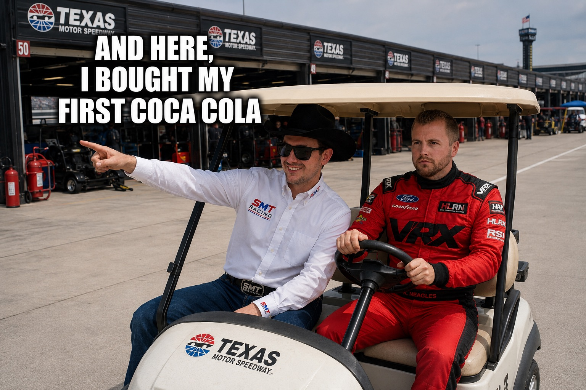
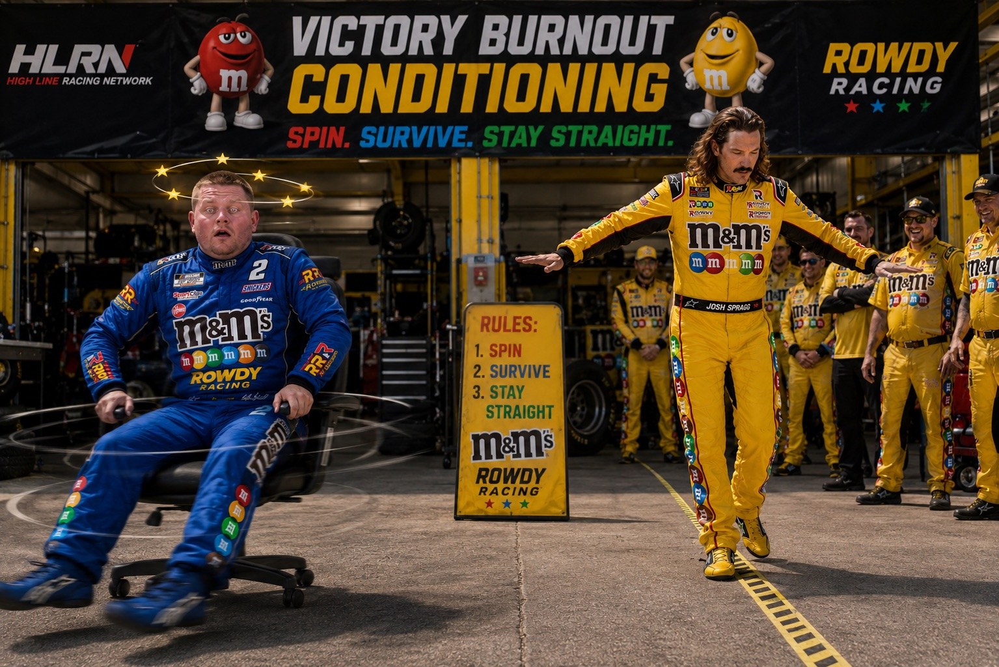
Update 4 est
Things are getting serious at the Mayor’s Office. After <@931596221183819827> makes a phone call, the FBI arrives with an official audit and questions <@1275835621109268550> about $46,000 in missing municipal revenue. Evan immediately points toward Bill Daniels’ desk. It’s empty, except for a note: “OUT TO LUNCH — BILL.” Uh oh.
Meanwhile: At Rowdy Racing, <@1470973699707633774> takes on Post-Wreck Interview Practice. He climbs out of a destroyed #9 M&M’s car, despite a board listing exactly what went wrong, looks at the media and delivers the perfect response: “I don’t know what happened.”
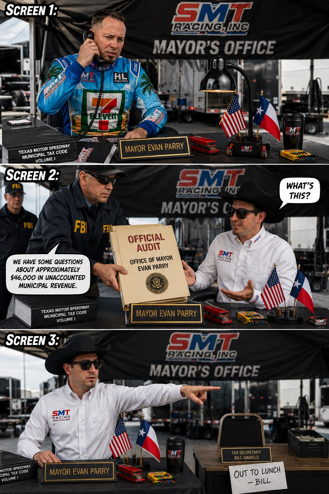
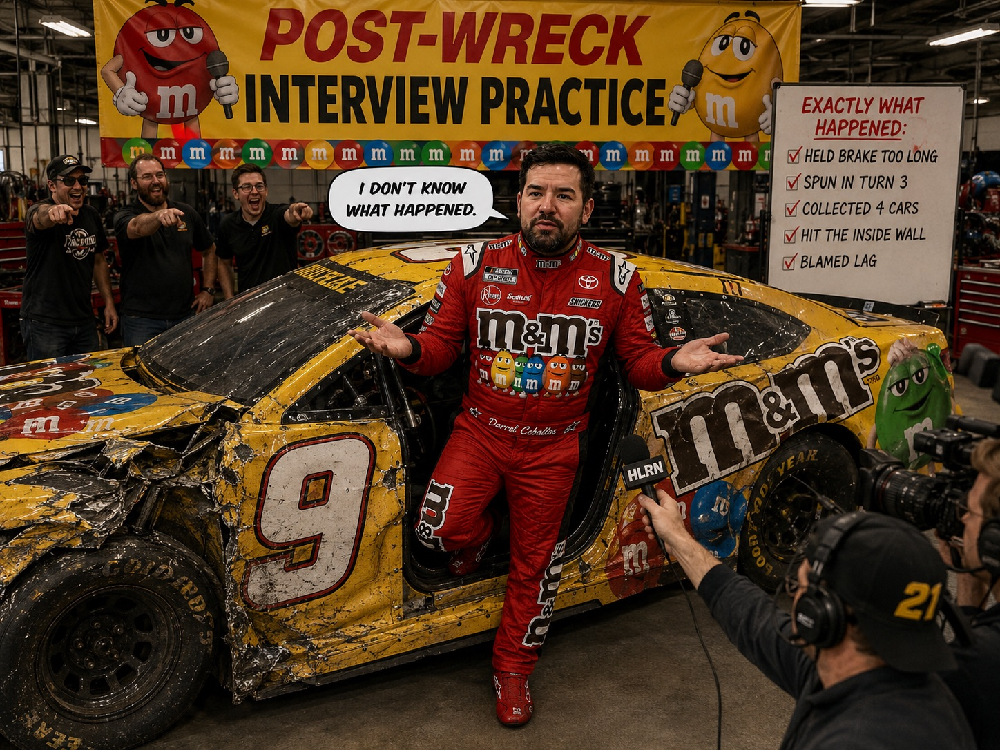
5 est
<@931596221183819827> suspicions are confirmed as the FBI confronts <@1275835621109268550> with the tax ledger provided by Donny. Unfortunately, every ridiculous charge appears to have his approval written all over it.
FBI Agent: “Did you approve processing fees?!”
Evan studies the evidence.
Meanwhile: Rowdy Racing has moved on to Pit Crew Celebration Practice, where the crew rehearses completely unnecessary synchronized celebrations for major accomplishments like qualifying 23rd or successfully completing a green-flag pit stop. Apparently, at Rowdy Racing, you don’t have to win to celebrate like you did.
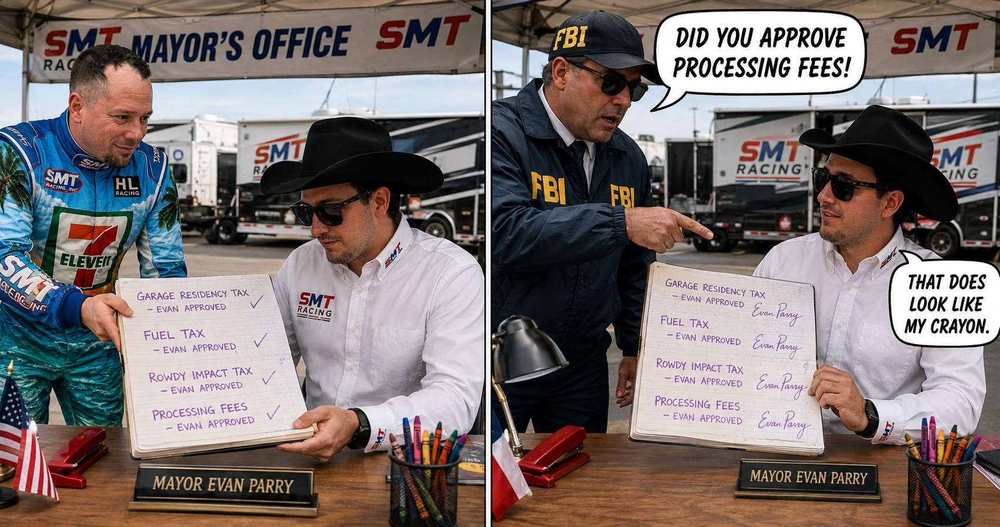
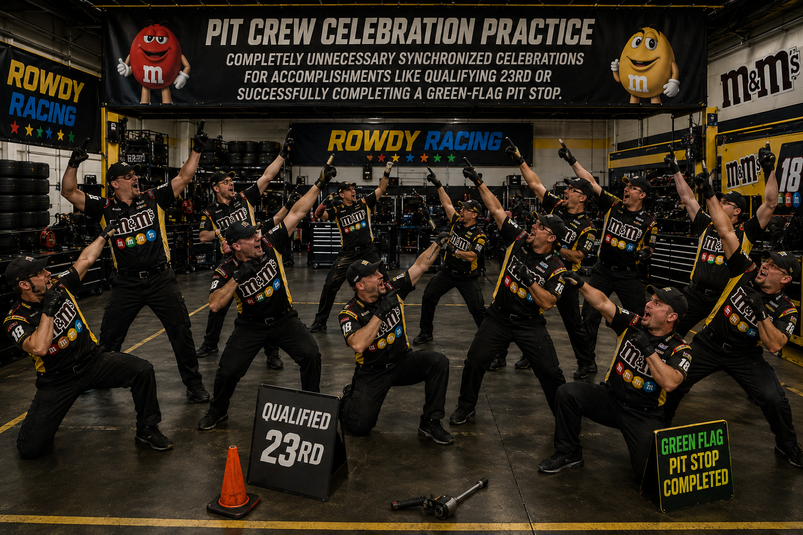
6 est
<@415334667370364928> sees his opening and makes a run for it, flying through the Texas Motor Speedway garage in a golf cart with bags of cash riding shotgun and the FBI right behind him. But his getaway comes to a screeching halt <@1275835621109268550> ‘s checkpoint with <@492852061608738847> on shift where he’s informed there’s a $7 Garage Exit Tax. Bill can’t believe it, and before he can figure out whether escaping arrest is tax deductible, the FBI catches up. Just when it looks like Bill is headed to federal custody, the IRS steps in and takes him, creating a wider conspiracy
Meanwhile: Back at the High Line camper, <@1051673096463077386> is relaxing and enjoying some quality television when he discovers a new reboot of Jerry Springer hosted by Steve Wilkos has apparently returned with a special Prime X Fight Night, featuring two familiar drivers in <@548734335482855435> and <@699448290072199189> who look ready to settle their differences the old-fashioned way. Jim seems way too entertained by this.
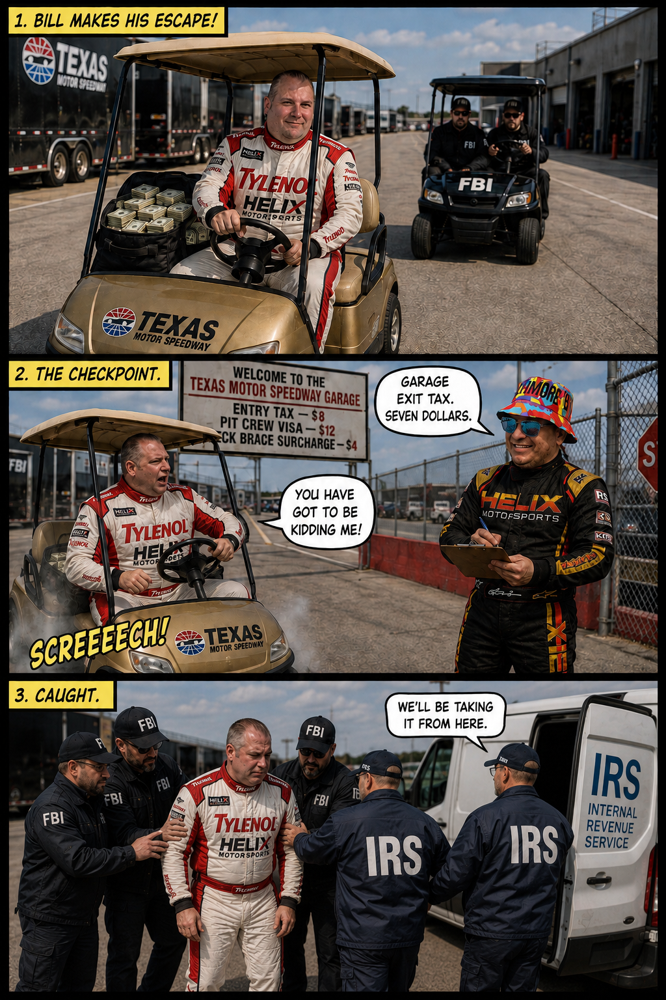
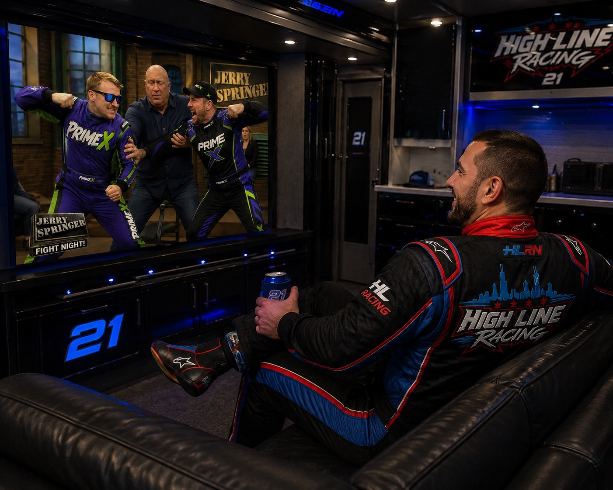
7 est
Back inside the High Line camper, the mood suddenly gets serious as the guys watch breaking news from Texas Motor Speedway. After the audit, the tax scandal, and <@415334667370364928> latest disaster, <@1275835621109268550> officially steps down as Mayor. Nobody says a word as Evan delivers the announcement.
For the first time all day, the High Line crew realizes this whole mayor thing may have actually gotten out of control.
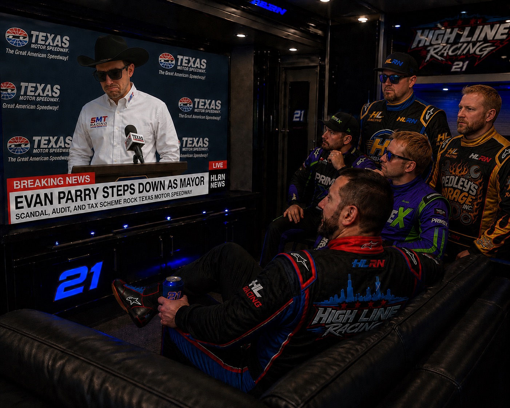
7:30 est
With <@1275835621109268550> officially out, Texas Motor Speedway wastes absolutely no time. Governor Greg Abbott has arrived. Drivers are told to vote for a new Track Mayor on their phones. 15 min later……..and just like that, a winner is crowned and handed the ceremonial key to the Speedway: <@795019555016933408> !!
Back at the former Mayor’s Office, Evan and Secretary <@931596221183819827> quietly pack up their belongings, including the most important piece of municipal equipment, the crayons.
That’s when <@1217977701500194866> walks by, points directly at them and delivers the only farewell they’re getting:
“SHAME.”
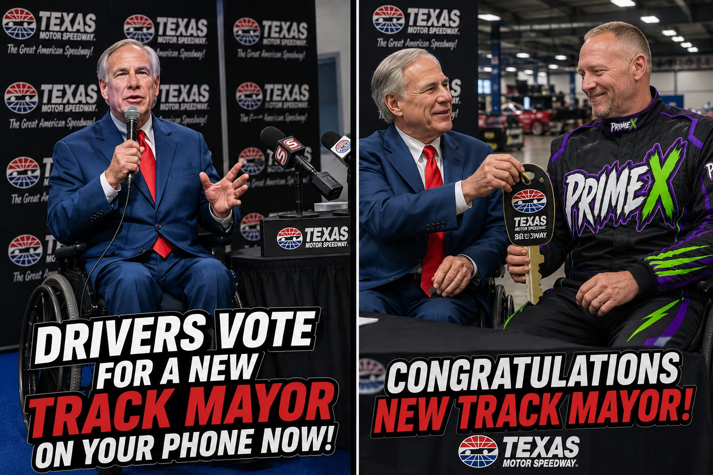
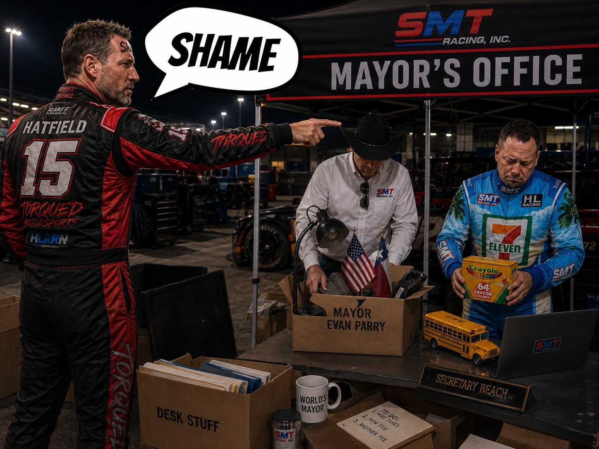
8 est
The driver introductions at Texas Motor Speedway are officially underway, and <@434901195983683597> kicks things off in style, roaring across the stage on a motorcycle as the crowd goes wild.
Next up is <@795019555016933408> , proudly carrying the ceremonial key to Texas Motor Speedway after being named the new track mayor.
But then things get completely out of control…………..
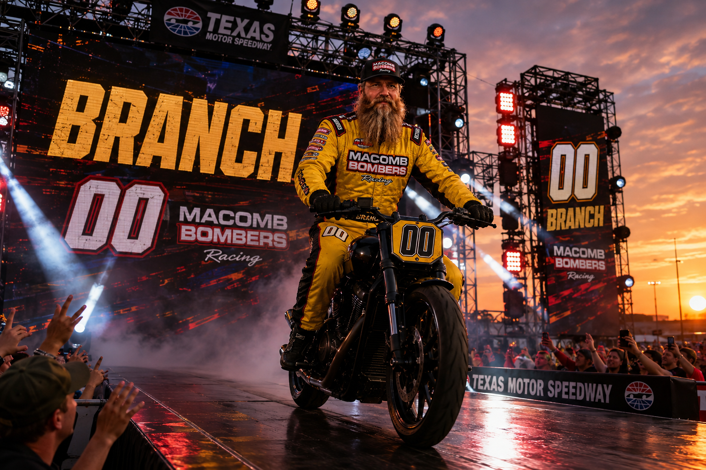
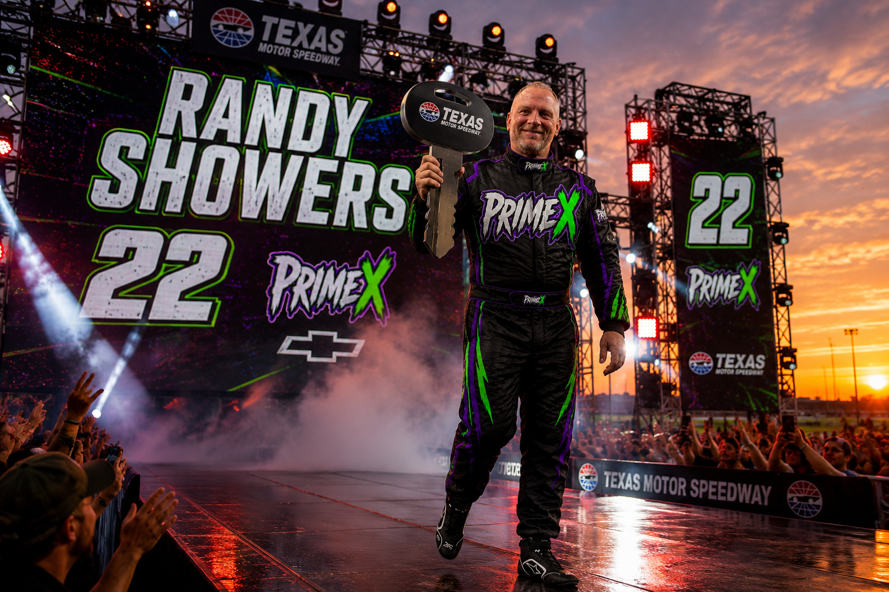
<@920731107257876501> and <@1317699525766414439> make their entrance……suddenly the Texas Rattlesnake himself Stone Cold Steve Austin appears and drops BOTH drivers with Stone Cold Stunners! Austin stands over the wreckage as the crowd erupts.
The battered LBS drivers slowly start getting back to their feet when the lights suddenly change and the gong hits!
It’s another fellow texan!! THAT’S THE UNDERTAKER!
The Deadman emerges through the smoke and marches straight toward them. Before Kenwood can escape, the Undertaker grabs him, hoists him upside down and delivers a devastating TOMBSTONE PILEDRIVER right in the middle of the Texas Motor Speedway stage!
At this point, surviving driver introductions might be harder than surviving the race.
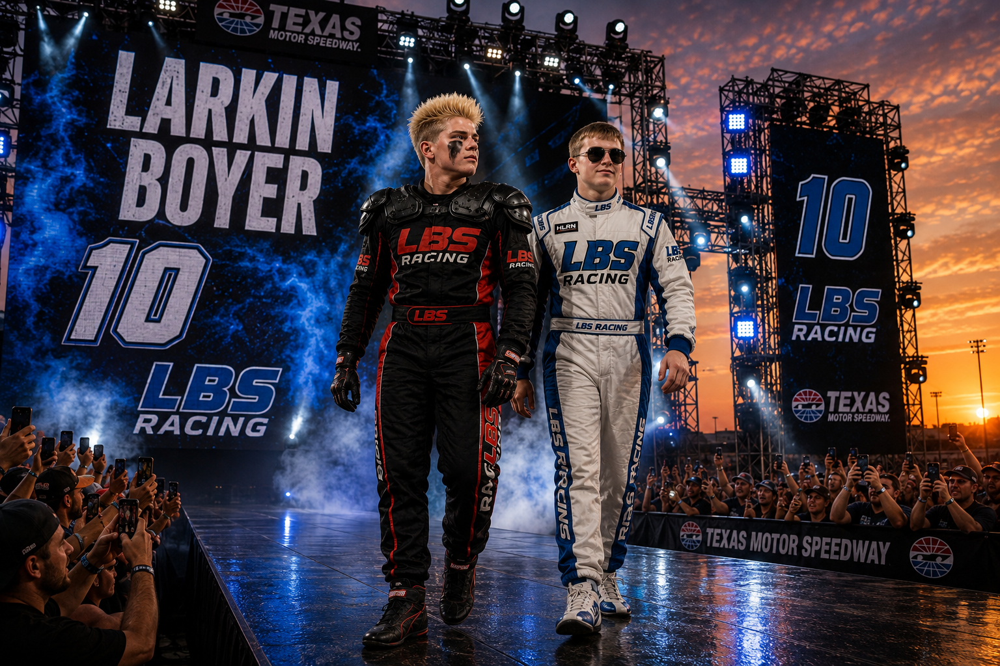
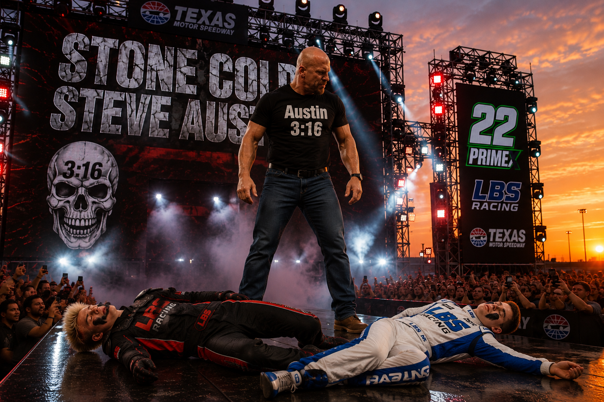
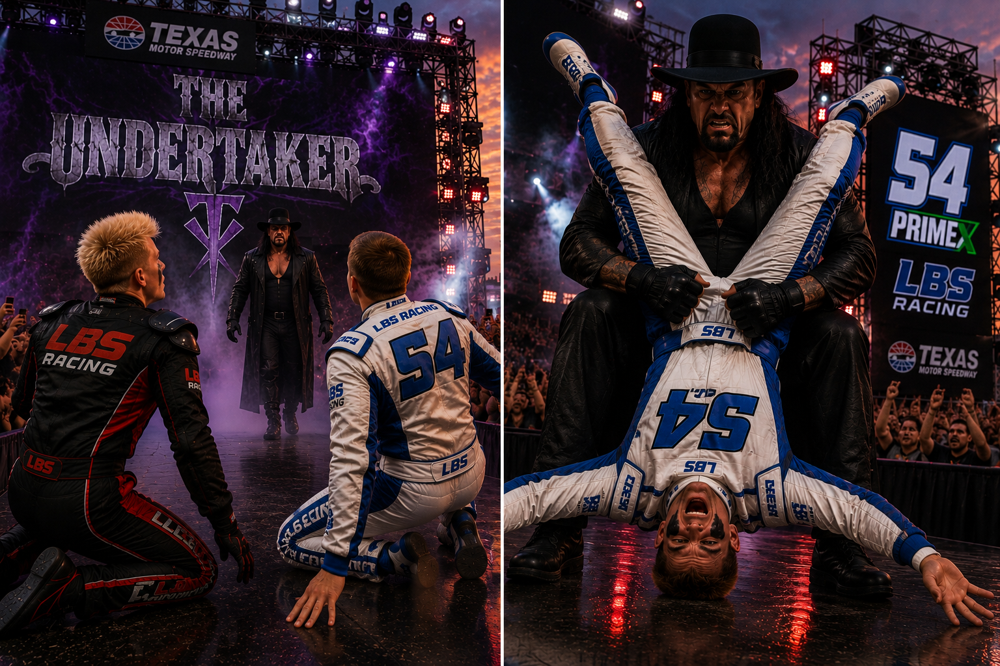